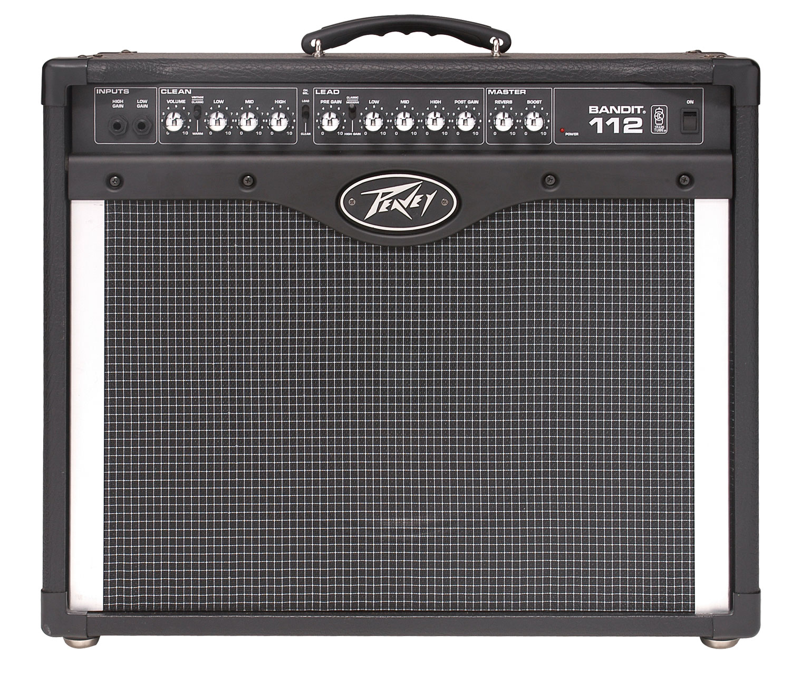

Peavey 6505 Plus 112 Tube Guitar Combo Amplifier.
. After forging the sound of aggression for more than 15 years, Peavey is making its highly respected, high-gain 6505 Series amplifier available for the first time in a 1x12 combo-amp configuration. The Peavey 6505 - the amplifier used by metal stars Trivium, Machine Head, Bullet For My Valentine and many more - will now be available in a 60-watt combo with two channels and an extensive feature set. The new 6505 Plus 112 combo harnesses the full gain and legendary tone of the Peavey 6505 Series, which since 1991 has defined the sounds of extreme rock guitar, into a format that is equally suited to clubs, rehearsal rooms and studios. Five select 12AX7 preamp tubes and a pair of 6L6GC power-amp tubes provide the tonal foundation for the 6505 Plus 112 combo, while patented circuitry such as Peavey's Resonance control tweak its legendary tone. Both the Lead and Rhythm channels feature independent three-band EQ, pre/post gain controls and Presence and Resonance adjustment. The Rhythm channel also includes a footswitchable Crunch boost. The 6505 Plus 112 combo also features the Peavey MSDI microphone-simulated direct interface, which eliminates the need for miking by allowing users to route the amp's signal directly to a recording device or mixing console. Additional features include three-spring reverb, effects loop and external speaker outputs, plus a 12" Sheffield loudspeaker in a sealed-back cabinet that offers maximum resonance and sound projection. The extensive Peavey 6505 artist roster includes Machine Head, Trivium, Bullet For My Valentine, Black Tide, Evergrey, Unearth, Story of the Year, Bleeding Through, Job For A Cowboy, Black Stone Cherry, In Flames, Gojira, Daath, Divine Heresy, Evergreen Terrace, The Devil Wears Prada, Bury Your Dead, All That Remains, Demon Hunter and many more.
Peavey 6505 Specifications:
o 60 watts (RMS)
o Footswitchable lead/rhythm channel select
o Effects loop
o Separate 3-band EQ on each channel
o Separate Resonance and Presence controls for each channel
o Two 6L6GC power amp tubes
o Lead channel: pre-/post-gain controls
o Genuine 3-spring reverb
o One 12" Sheffield speaker
o Top handle
o Five 12AX7 preamp tubes
o External speaker outputs
o 16, 8, or 4 ohms (switchable)
o Rhythm channel: pre-/post-gain, footswitchable Crunch boost
o Integrated MSDI microphone-simulated XLR direct interface
o Weight Unpacked: 61.29 lb(27.8 kg)
o Weight Packed: 68.34 lb(31 kg)
o Width Packed: 26"(66.04 cm)
o Height Packed: 30"(76.2 cm)
o Depth Packed: 16"(40.64 cm).